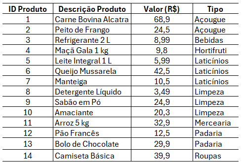
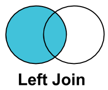
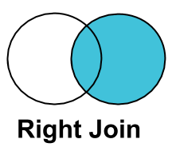
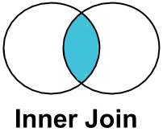
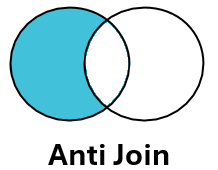
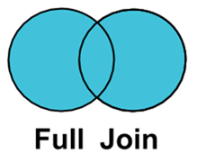

Desafios de Criação de Bases de Dados do Ponto de Vista Operacional
Introdução
Além dos desafios organizacionais (vistos na página anterior, Desafios de Bases Alinhadas ao Negócio), existem desafios mais operacionais/técnicos na construção de uma base de dados para um problema de negócio: Obtenção de Dados, Joins, Limpeza de Dados, Manipulação de Dados e Data Leakage.
Slides originais disponíveis AQUI.
Obtenção de Dados
Como se conectar a múltiplas fontes de dados? No ambiente corporativo, é muito comum trabalharmos remotamente — isto é, trabalhar na nuvem, conectando-se remotamente a dados que estão hospedados fora da sua máquina.
Exercício pra casa: puxar dados de alguma base de dados pública.
Abaixo, dois exemplos ilustrativos de código de conexão a bancos de dados em R: o primeiro cria uma conexão local (em memória) para fins didáticos, e o segundo mostra uma conexão remota real a um banco de dados Postgres hospedado na nuvem (Neon).
# Exemplo 1: conexão local (em memória), útil para testar/aprender SQL sem
# depender de um servidor remoto
install.packages(c("DBI", "RSQLite", "dplyr", "dbplyr"))
library(DBI)
library(RSQLite)
library(dplyr)
library(dbplyr)
# 1. Estabelecer a conexão (usando um banco SQL em memória para testes)
con <- dbConnect(RSQLite::SQLite(), ":memory:")
# 2. Subir um dataset de exemplo para o banco SQL
dbWriteTable(con, "cars_sql_table", mtcars)
# 3. Criar um ponteiro (lazy) para a tabela SQL -- nenhum dado é baixado ainda
lazy_cars_table <- tbl(con, "cars_sql_table")
# 4. Construir a query usando verbos do dplyr (também é "lazy")
lazy_query <- lazy_cars_table %>%
filter(mpg > 20) %>%
select(mpg, cyl, hp) %>%
mutate(hp_per_cyl = hp / cyl)
# 5. OPCIONAL: ver o código SQL que o R gerou de forma lazy
show_query(lazy_query)
# 6. Executar e coletar (aqui sim a query roda no banco)
final_dataframe <- collect(lazy_query)
dbDisconnect(con)# Exemplo 2: conexão remota real a um banco de dados Postgres na nuvem (Neon)
install.packages(c("DBI", "RPostgres", "dplyr", "dbplyr"))
library(DBI)
library(RPostgres)
library(dplyr)
conn <- dbConnect(
RPostgres::Postgres(),
host = "ep-twilight-frost-athewr88-pooler.c-9.us-east-1.aws.neon.tech",
port = 5432,
dbname = "neondb",
user = "neondb_owner",
password = "my_password",
sslmode = "require",
channel_binding = "require"
)
# Criar um ponteiro (lazy) para uma tabela do banco remoto
lazy_persons <- tbl(conn, "persons")
head(lazy_persons)
#> # A tibble: 2 x 5
#> id first_name last_name date_of_birth email
#> <int> <chr> <chr> <date> <chr>
#> 1 1 John Doe 1995-01-05 john.doe@postgresqltutorial.com
#> 2 2 Jane Doe 1995-02-05 jane.doe@postgresqltutorial.com
dbDisconnect(conn)Joins
Uma das tarefas mais comuns e imprescindíveis para quem trabalha com dados é efetivamente saber combinar informações de múltiplas tabelas.
Exemplo motivador: suponha que você é um(a) cientista de dados de um supermercado e precisa calcular os preços com desconto que são aplicados por tipo de produto, a partir de uma tabela de produtos e uma tabela de descontos por tipo.

- Passo 1: associar cada produto à sua respectiva alíquota de desconto.
- Passo 2: calcular o valor com desconto.
Nota: o Passo 1 também seria possível resolver usando a função PROCV do Excel, mas ela é bastante limitada em comparação a um JOIN.
O Passo 1 é um problema típico para ser resolvido via JOIN. Suponha que você tenha uma tabela A e uma tabela B; os principais tipos de join são:
- INNER JOIN: retorna apenas as linhas cujo valor da chave existe em ambas as tabelas.
- LEFT JOIN: mantém todas as linhas da tabela da esquerda (ou direita, dependendo da convenção), adicionando as colunas da outra tabela quando existir correspondência.
- ANTI JOIN: retorna apenas as linhas de uma tabela cuja chave não possui correspondência na outra tabela.
- FULL JOIN: retorna todos os registros de ambas as tabelas, com ou sem correspondência.





A chave de um join é a(s) variável(is) presente(s) em ambas as tabelas que permite conectá-las — no exemplo do supermercado, a variável Tipo é a chave que conecta a tabela de produtos à tabela de descontos.
Alguns exemplos práticos, usando a tabela de produtos (A) e a tabela de descontos por tipo (B):
- LEFT JOIN: mantém as linhas da tabela de produtos, adicionando a coluna de desconto quando existir correspondência.
- INNER JOIN: retorna apenas os produtos cujo tipo existe em ambas as tabelas, adicionando a coluna de desconto (produtos sem tipo correspondente somem do resultado).
- ANTI JOIN: retorna apenas os produtos cujo tipo não possui correspondência na tabela de descontos (o “espelho” do resultado do
INNER JOIN). - FULL JOIN: retorna todos os produtos e todos os tipos, com ou sem correspondência.
Por que não usar simplesmente um PROCV do Excel para tudo isso?
- Um
JOINmantém as colunas de todas as tabelas envolvidas de uma vez, sem a necessidade de repetir a fórmula coluna a coluna. - É possível conectar tabelas usando mais de uma chave. Por exemplo, suponha que as alíquotas de desconto sejam diferentes por cidade — nesse caso, a chave passa a ser a combinação
Tipo + Cidade, algo que oPROCVtradicional não resolve de forma direta.
Limpeza de Dados
Data cleaning (limpeza de dados) é o processo de identificar e corrigir ou remover erros, inconsistências, duplicatas e dados irrelevantes de um conjunto de dados brutos.
Problemas típicos encontrados em uma base “suja”:
- Problemas estruturais (nomes de colunas)
- Coluna “fantasma” e coluna constante
- Problemas de linhas e dados ausentes (
NAs) - Erros de digitação (ex.: “JOão”, “João” e “Maria” — este último com um espaço extra invisível no final)
- Inconsistência de tipos de dados (datas em formatos diferentes, ou como número serial)
- Valores discrepantes (outliers) e erros numéricos (ex.: salário negativo?)
- Dados duplicados
Abaixo, o código completo (cod_3_data_cleaning.R) referenciado nos slides, que gera uma base “suja” propositalmente e aplica uma rotina de limpeza usando os pacotes janitor, dplyr e stringr:
library(janitor)
library(dplyr)
library(stringr)
# Criar um conjunto de dados ainda mais caótico com erros e outliers
dados_sujos_avancados <- data.frame(
`Primeiro Nome!!!` = c("João", "Maria ", "J0ão", NA, "Roberto", NA, "Alice", "Carlos"),
`Último Nome` = c("Silva", "Santos", "silva ", NA, "Souza", NA, "Oliveira", "Pereira"),
`ID..Funcionario` = c(101, 102, 101, NA, 103, NA, 104, 105),
`DATA ADMISSAO` = c("2021-01-15", "44211", "2021-01-15", NA, "2023-05-11", NA, "45123", "2025-08-20"),
`ColunaAtivo` = c("SIM", "SIM", "SIM", NA, "SIM", NA, "SIM", "SIM"),
`SALARIO` = c(5000, 6000, 5000, NA, 7500, NA, 800000, -4500), # Outliers aqui
` ` = c(NA, NA, NA, NA, NA, NA, NA, NA),
check.names = FALSE
)
dados_limpos_avancados <- dados_sujos_avancados %>%
# 1. Limpeza estrutural clássica do janitor
clean_names() %>%
remove_empty(which = c("rows", "cols")) %>%
remove_constant() %>%
mutate(data_admissao = convert_to_date(data_admissao)) %>%
# 2. Corrigindo erros de digitação nos textos
mutate(
primeiro_nome = str_trim(primeiro_nome), # remove espaços extras (ex: "Maria ")
ultimo_nome = str_trim(ultimo_nome),
primeiro_nome = str_replace_all(primeiro_nome, "0", "o"), # "J0ão" vira "João"
ultimo_nome = str_to_title(ultimo_nome) # "silva " vira "Silva"
) %>%
# 3. Tratando os valores discrepantes (outliers) no salário
mutate(
salario = case_when(
salario < 0 ~ NA_real_, # salários negativos viram NA
salario > 500000 ~ salario / 100, # corrige erro de digitação (800000 vira 8000)
TRUE ~ salario
)
)
# ---- Encontrar duplicatas ----
# Todas as linhas 100% idênticas no banco inteiro
duplicadas_totais <- dados_limpos_avancados %>% get_dupes()
# Duplicatas pelo ID do funcionário
duplicatas_por_id <- dados_limpos_avancados %>% get_dupes(id_funcionario)
# Limpeza final: remove a segunda ocorrência de cada ID duplicado
dados_perfeitos <- dados_limpos_avancados %>%
distinct(id_funcionario, .keep_all = TRUE)
dados_perfeitosO antes e depois da limpeza (dados de exemplo usados no código acima):
Base “suja”
| Primeiro Nome!!! | Último Nome | ID..Funcionario | DATA ADMISSAO | ColunaAtivo | SALARIO |
|---|---|---|---|---|---|
| João | Silva | 101 | 2021-01-15 | SIM | 5000 |
| Maria | Santos | 102 | 44211 | SIM | 6000 |
| J0ão | silva | 101 | 2021-01-15 | SIM | 5000 |
| NA | NA | NA | NA | NA | NA |
| Roberto | Souza | 103 | 2023-05-11 | SIM | 7500 |
| NA | NA | NA | NA | NA | NA |
| Alice | Oliveira | 104 | 45123 | SIM | 800000 |
| Carlos | Pereira | 105 | 2025-08-20 | SIM | -4500 |
Base limpa (colunas renomeadas, linhas/colunas vazias removidas, duplicata do ID 101 eliminada, textos padronizados, outliers de salário tratados)
| primeiro_nome | ultimo_nome | id_funcionario | data_admissao | salario |
|---|---|---|---|---|
| João | Silva | 101 | 2021-01-15 | 5000 |
| Maria | Santos | 102 | 2021-01-15 | 6000 |
| Roberto | Souza | 103 | 2023-05-11 | 7500 |
| Alice | Oliveira | 104 | 2023-07-16 | 8000 |
| Carlos | Pereira | 105 | 2025-08-20 | NA |
Manipulação de Dados
Neste contexto, “manipulação” de dados é no sentido de lidar/manejar/preparar os dados — também conhecido como Data Wrangling. A família de JOINs vista anteriormente também pode ser vista como uma etapa de um processo de manipulação de dados, mas manipulação é mais do que isso:
“Data wrangling is the process of cleaning, structuring and enriching raw data to be used in data science, machine learning (ML) and other data-driven applications” — IBM
Exercício motivador: suponha que você tenha três bases — vendas, produtos e clientes:
- Tarefa 1: criar uma tabela com os nomes dos clientes de Porto Alegre, para os meses de março a junho, com quantidade de vendas e faturamento (R$) por categoria.
- Tarefa 2: reorganizar a tabela resultante da Tarefa 1 para apresentar os valores de faturamento das categorias em colunas (preenchendo combinações ausentes com zero).
- Tarefa 3: com os dados originais, fazer um gráfico de gastos totais por cliente e período do dia, respondendo “qual cliente mais gastou, em valores absolutos, no período da noite?” (resposta: foi o Carlos).
Abaixo, o código completo (cod_4_data_wrangling.R) referenciado nos slides, com a criação das três tabelas de exemplo e o pipeline de limpeza/wrangling/joins que resolve as três tarefas:
library(dplyr)
library(tidyr)
library(lubridate)
library(ggplot2)
# ---- Tabela de vendas (com 1 duplicata proposital: id_venda 30) ----
vendas <- tibble(
id_venda = c(1,2,3,4,5,6,7,8,9,10,11,12,13,14,15,
16,17,18,19,20,21,22,23,24,25,26,27,28,29,30,30),
id_cliente = c(101,102,103,104,105,101,102,106,107,103,
108,109,101,110,104,102,103,105,106,101,
107,108,109,110,104,105,102,101,106,103,103),
id_produto = c(1,2,3,4,5,2,1,6,3,5,4,2,1,6,3,
5,4,2,1,6,3,5,2,4,1,6,3,5,2,4,4),
data_hora = c("2025-01-05 09:15:23", "2025-01-09 14:32:10", "...",
NA, "2025-06-30 20:05:54", "2025-06-30 20:05:54") # (ver script completo p/ vetor inteiro)
)
# ---- Tabela de clientes ----
clientes <- tibble(
id_cliente = 101:110,
nome = c("Ana","Bruno","Carlos","Diana","Eduardo",
"Fernanda","Gabriel","Helena","Igor","Juliana"),
cidade = c("Porto Alegre — RS","Curitiba — PR","Campinas — SP","Porto Alegre — RS",
"Curitiba — PR","Londrina — PR","Campinas — SP","Porto Alegre — RS",
"Curitiba — PR","Porto Alegre — RS")
)
# ---- Tabela de produtos ----
produtos <- tibble(
id_produto = 1:6,
produto = c("Arroz 5 kg","Refrigerante 2 L","Detergente","Shampoo","Café 500 g","Sabão em Po"),
categoria = c("Alimentos","Bebidas","Limpeza","Higiene","Alimentos","Limpeza"),
preco = c(28.90, 9.50, 4.90, 18.90, 21.50, 16.90)
)
# Separar cidade e estado
clientes2 <- clientes %>%
separate(cidade, into = c("cidade", "estado"), sep = " — ")
dados_pre_processados <- vendas %>%
distinct() %>% # 1. remover duplicatas
filter(!is.na(data_hora)) %>% # 2. tratar valores faltantes
mutate(data_hora = ymd_hms(data_hora)) %>% # 3. converter data e hora
left_join(clientes2, by = "id_cliente") %>% # 4. joins
left_join(produtos, by = "id_produto") %>%
mutate( # 5. criar novas colunas
ano = year(data_hora),
mes = month(data_hora),
hora = hour(data_hora),
periodo = case_when(
hora < 12 ~ "Manhã",
hora < 18 ~ "Tarde",
TRUE ~ "Noite"
)
)
# ---- Tarefa 1 ----
tarefa_1 <- dados_pre_processados %>%
filter(cidade == "Porto Alegre", mes %in% c(3, 4, 5, 6)) %>%
rename(cliente = nome, valor_venda = preco) %>%
group_by(cliente, mes, categoria) %>%
summarise(vendas = n(), faturamento = sum(valor_venda), .groups = "drop")
# ---- Tarefa 2 ----
tarefa_2 <- tarefa_1 %>%
select(-vendas) %>%
pivot_wider(names_from = categoria, values_from = faturamento, values_fill = 0)
# ---- Tarefa 3 ----
dados_grafico <- dados_pre_processados %>%
group_by(nome, periodo) %>%
summarize(gastos_totais = sum(preco)) %>%
ungroup() %>%
complete(nome, periodo = c("Manhã", "Tarde", "Noite"), fill = list(gastos_totais = 0))
dados_grafico %>%
ggplot(aes(x = nome, y = gastos_totais, fill = periodo)) +
geom_col(position = "dodge") +
labs(x = "Nome", y = "Gastos Totais", fill = "Período") +
theme_minimal(base_size = 12)As tabelas originais de exemplo usadas nesse pipeline:
Tabela clientes
| id_cliente | nome | cidade |
|---|---|---|
| 101 | Ana | Porto Alegre — RS |
| 102 | Bruno | Curitiba — PR |
| 103 | Carlos | Campinas — SP |
| 104 | Diana | Porto Alegre — RS |
| 105 | Eduardo | Curitiba — PR |
| 106 | Fernanda | Londrina — PR |
| 107 | Gabriel | Campinas — SP |
| 108 | Helena | Porto Alegre — RS |
| 109 | Igor | Curitiba — PR |
| 110 | Juliana | Porto Alegre — RS |
Tabela produtos
| id_produto | produto | categoria | preco |
|---|---|---|---|
| 1 | Arroz 5 kg | Alimentos | 28.90 |
| 2 | Refrigerante 2 L | Bebidas | 9.50 |
| 3 | Detergente | Limpeza | 4.90 |
| 4 | Shampoo | Higiene | 18.90 |
| 5 | Café 500 g | Alimentos | 21.50 |
| 6 | Sabão em Pó | Limpeza | 16.90 |
(A tabela vendas, com 31 linhas — incluindo a duplicata proposital do id_venda 30 — está disponível no script completo cod_4_data_wrangling.R.)
Data Leakage
Data Leakage: quando uma variável contém informações que não estariam disponíveis no momento da tomada de decisão, mas aparecem nos dados históricos. Isso faz com que se superestime artificialmente a capacidade preditiva do modelo — em outras palavras, “vazam” dados do futuro para o passado.
Data leakage também pode estar presente nas etapas de pré-processamento de dados, nas divisões entre treino e teste para validação de modelos de ML. Exemplo clássico — imputação de média: você não pode usar os dados de teste para descobrir qual média imputar nos valores faltantes; tudo o que o modelo “aprende” no treino deve ser aplicado ao teste, nunca o contrário.
Alguns exemplos práticos de data leakage:
- Prever a aprovação em uma disciplina. O erro: usar a nota final como variável preditora. O modelo rapidamente aprende uma regra praticamente perfeita — “se nota final ≥ 6,0, então aprovado = sim” — só que essa “predição” não tem nenhuma utilidade prática, pois a nota final só existe depois do resultado já estar definido.
- Concessão de empréstimo. Objetivo: prever se um cliente será inadimplente, usando variáveis como renda, idade, valor solicitado, score de crédito, número de dependentes e… quantidade de parcelas atrasadas. O modelo acaba aprendendo uma coisa óbvia (quem atrasou parcelas vira inadimplente), mas isso é uma consequência da inadimplência, não uma causa.
- Fraude. Objetivo: prever se uma transação é fraudulenta, usando valor, país, horário e a variável “transação estornada”. O problema: uma transação normalmente é estornada justamente porque foi identificada como fraude — o modelo aprende que “transação estornada = fraude”, mas em produção, no momento da decisão, essa informação ainda não existe.
- Séries temporais. Em problemas temporais, a ordem cronológica deve ser respeitada para evitar que o modelo aprenda com informações futuras — ou seja, os dados usados para prever um determinado período nunca podem incluir informações que só existiriam depois desse período.